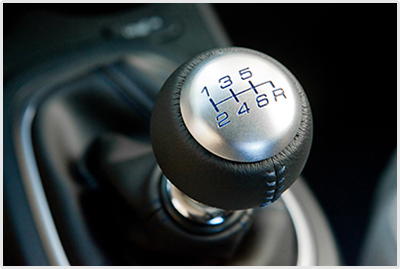
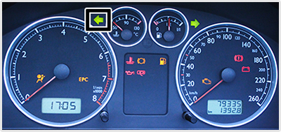
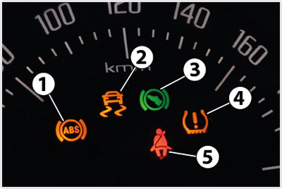
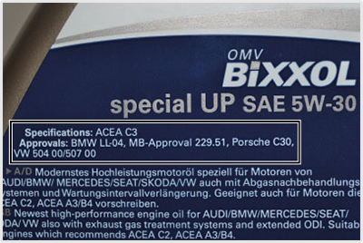
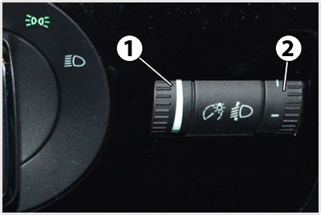
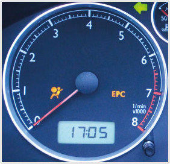
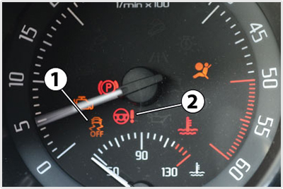
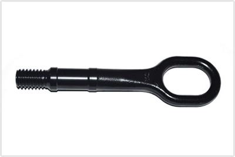

- 2136. Milyen hűtőfolyadék hőmérsékletnél a legkedvezőbb a motor üzeme? #703254
- Kb. 80-95 Celsius-foknál.
- Kb. 65-75 Celsius-foknál.
- Kb. 50-75 Celsius-foknál.
- 90 Celsius-fok felett.
- 50 Celsius-fok alatt.
- 2137. Milyen következménnyel kell számolni, ha a motor levegőszűrője eltömődött? #703255
- Megnövekszik a jármű üzemanyag fogyasztása.
- Megnövekszik a jármű kipufogó gázok mennyisége.
- Eldugul az üzemanyag befecskendező fúvókája.
- Nincs következménye, mert a motor levegőszűrője csak az utastérbe jutó levegőt szűri.
- Leáll a motor.
- 2138. Milyen olajat használ utántöltésre, ha a motorban lévő olajszint csökken? #703256
- Ugyanazt az olajfajtát, ami a motorban van.
- Bármilyen motorolajat.
- A motorban lévőnél jobb minőségűt.
- Az utántöltéshez csak fagyálló használható.
- A motorban lévőnél rosszabb minőségűt.

- 2139. Mennyinek kell lennie a motorolaj mennyiségének a képen látható ellenőrző pálcával történő ellenőrzéskor? #703257
- A minimum és a maximum között.
- Lehetőleg a maximum fölött.
- Lehetőleg a minimum alatt.
- 2140. Igényel-e karbantartást a jármű ablaktörlő berendezése? #703258
- Igen, az ablaktörlő lapátok minőségét ellenőrizni kell, a kopott ablaktörlő lapátokat cserélni kell.
- Nem, mert az ablaktörlő berendezésben nincsenek kopó alkatrészek.
- Igen, de csak akkor, ha a járművet műszaki vizsgára készíti fel.
- Nem, mert az ablaktörlő berendezés kopását egy szerkezet automatikusan utánállítja.
- 2141. Kell-e időközönként cserélni a motor kenőolaját? #703259
- Igen, a meghatározott időközönként, ill. futásteljesítményenként.
- Nem, mert a motorolaj nem használódik el.
- Cserélni nem kell, csak le kell szűrni belőle a leülepedett olajsarat.
- Igen, de csak akkor, ha már nehéz a kormányt forgatni.
- Igen, de csak akkor, ha a motor akadozva jár.
- 2142. Szükséges-e az ablakmosó tartályt télen fagyálló ablakmosó folyadékkal feltölteni? #703260
- Igen, mert a folyadék fagyveszélynek van kitéve.
- Nem, mert a motortérben mindig meleg van.
- Nem, mert a szükséges ablakmosás olyan rövid ideig tart, hogy ez idő alatt nem fagy meg az ablakmosó folyadék.
- Igen, de csak akkor, ha az ablakmosó tartályon fellazult a zárósapka.
- Nem, mert a fagyálló ablakmosó folyadék rongálja az ablaktörlő gumilapátját.
- 2143. Milyen folyadékot kell tölteni az ablakmosó berendezés tartályába? #703291
- Téli vagy nyári ablakmosó folyadékot.
- Csak desztillált vizet.
- Csak magas ph értékű dielektrikumot.
- 2144. Miért fontos az ablaktörlő lapátok folyamatos ellenőrzése? #703292
- Mert a rossz ablaktörlő lapát nem töröl egyenletesen, így korlátozottá válik a járműből történő kilátás, ami balesetveszélyes.
- Ellenőrzése nem fontos, a kopott ablaktörlő lapát a közlekedés biztonságát nem veszélyezteti.
- Ellenőrzése nem szükséges, elkopását a műszerfalon sárga fényű lámpa jelzi.
- 2145. Jól működő kormányberendezés esetén, a mozgó gépjárművel történő kormányzás befejezése után az elfordított kerekek... #703326
- visszatérnek egyenes állásba.
- elfordítva maradnak.
- csak kis mértékben fordulnak vissza.
- 2146. Ha az ablaktörlő lapátja kopott,... #714815
- akkor a lapátokat cserélni kell.
- akkor a lapátokat egy nedves ruhával meg kell tisztítani.
- akkor a lapátok dőlésszögén állítani kell.

- 2147. Hogyan kapcsolhatók a képen látható sebességváltó fokozatai járó motor mellett? #716987
- A tengelykapcsoló pedál benyomását követően kapcsolhatóak a fokozatok.
- A fékpedálra lépve kapcsolható a kívánt fokozat.
- Elinduláskor a tengelykapcsoló pedált benyomva kell az 1-es, vagy a hátrameneti ('R') fokozatot kapcsolni. A magasabb fokozatok kapcsolásánál erre már nincsen szükség.
- A fokozatok kapcsolásához mindig folyamatosan nyomni kell a gázpedált.
- 2148. Fokozatváltáskor hogyan kell kezelni a tengelykapcsoló pedált? #716991
- Ütközésig be kell nyomni.
- Álló helyzetben, az első fokozat bekapcsolásakor ütközésig be kell nyomni, magasabb fokozatok kapcsolásakor elég csak félig benyomni.
- Visszakapcsolásnál mindig ütközésig be kell nyomni, felfelé kapcsolásnál nem szükséges a tengelykapcsoló pedált működtetni.
- Felfelé kapcsolásnál mindig ütközésig be kell nyomni, visszakapcsolásnál nem szükséges a tengelykapcsoló pedált működtetni.
- 2149. Mi az oka annak, ha a tengelykapcsoló pedál teljes lenyomásánál is csak recsegő zaj kíséretében kapcsolhatók a sebességfokozatok? #716992
- A tengelykapcsoló nem emel ki teljesen.
- Túl kicsi a tengelykapcsoló holtjátéka.
- Elkopott a tengelykapcsoló súrlódóbetéje.
- Elfolyt az olaj a gépkocsi sebességváltójából.
- 2150. Hogyan működtetheti gépjárműve motorfékjét? #717004
- Bekapcsolt sebességfokozat esetén a kuplungpedál benyomása nélkül a gázpedálról lelépve.
- A fékpedál egyszeri megnyomásával.
- A sebességváltó kapcsolókarjának üres állásába állításával.
- A tengelykapcsoló pedál benyomásával.

- 2151. Miről tájékoztat a képen bekeretezetten látható visszajelző lámpa felvillanása? #717010
- A baloldali irányjelzők működéséről.
- A jobboldali irányjelzők működéséről.
- A baloldali helyzetjelzők működéséről.
- A bal oldali ködlámpa működéséről.
- 2152. Mennyi üzemanyagot fogyasztanak a korszerű belsőégésű motorokkal felszerelt járművek motorfék üzemben? #721056
- Motorfék üzemben nem fogyasztanak üzemanyagot.
- Az alapjáraton megszokott mennyiséget fogyasztják.
- Általában 2-4 litert fogyasztanak óránként.
- Ilyenkor 2-4 l/100 km a fogyasztásuk.

- 2153. Tovább közlekedhet-e, ha a képen látható 1-es jelű visszajelző lámpa menet közben folyamatosan világít? #721059
- Igen, de a blokkolásgátló (ABS) rendszer működésére nem számíthat, ezért haladéktalanul keressen fel szakszervizet.
- Igen, de csak csökkentett sebességgel a legközelebbi javító műhelyig, mert az elérhető fékhatás számottevően csökkent.
- Nem, a járművet szakszervizbe kell szállítani.
- Igen, korlátozás nélkül, csak arra kell számítani, hogy a fékpedált valamivel nagyobb erővel kell nyomni.
- 2154. Mire hívja fel a figyelmet a fékpedál lüktetése (pulzálása) blokkolásgátlóval (ABS) felszerelt személygépkocsival történő intenzív fékezés esetén? #721060
- Az ABS rendszer működésbe lépett.
- Elkoptak a jármű fékbetétei.
- Nem működik a fékrásegítő.
- A blokkolásgátló rendszer meghibásodott.
- 2155. Mit jelent, ha a képen látható 2-es jelű visszajelző lámpa menet közben folyamatosan világít? #721061
- Az elektronikus menetdinamikai szabályozórendszer (elektronikus menetstabilizáló program - ESP) meghibásodott vagy kikapcsolták.
- A blokkolásgátlót (ABS) a jármű vezetője kikapcsolta.
- Az elektronikus menetdinamikai szabályozórendszer (elektronikus menetstabilizáló program - ESP) működésbe lépett.
- A blokkolásgátló (ABS) rendszer meghibásodott.
- 2156. Az Otto-, vagy a dízelmotorok hidegindítása nehézkesebb? #721081
- A dízelmotoroké.
- Az Otto-motoroké.
- Egyformán nehézkes mindkét motorfajta hidegindítása.
- A belsőégésű motorok téli indítása -50 Celsius fokig egyik motorfajtánál sem okoz különösebb gondot.
- 2157. Milyen motorok esetén alkalmaznak a hidegindítás megkönnyítésére izzítást? #721082
- Dízelmotorok esetében.
- Otto-motorok esetében.
- Kétütemű motorok esetében.
- Minden járműmotor esetében.

- 2158. Mire utal a motorolaj flakonján a képen bekeretezett felirat? #721083
- A motorolaj teljesítményszintjére, illetve azokra a járműgyártói előírásokra, melyeknek a motorolaj megfelel.
- A motorolaj összetételére utal, amely ebben az esetben félszintetikus.
- A motorolaj viszkozitására, amely ez esetben lehetővé teszi a téli és nyári használatot is.
- A motorolaj összetételére utal, amely ebben az esetben szintetikus.

- 2159. Mikor lehet szükség a képen látható 2-es jelű fényszóró magasságállító beállításának megváltoztatására? #721085
- Ha változik a jármű terhelési jellege és ezzel a tompított fényszóró vetítési magassága.
- Ha csökken a jármű elektromos rendszerének feszültsége, és ezzel a fényszórók fényereje.
- Ha a fényszóróizzók öregedése miatt csökken a fényszórók fényereje.
- A fényszóróizzók cseréjét követően.
- 2160. Mi a gépjármű hatótávolsága? #723534
- Az egy tank üzemanyaggal megtehető maximális út hossza.
- Az 1 liter üzemanyaggal megtehető maximális út hossza.
- Az 1 óra alatt megtehető út hossza.
- A két olajcsere között megtehető út hossza.
- 2161. Miért van szükség a motorházfedelek kettős reteszelésére? #723538
- Azért, hogy a motorházfedél menet közben ne csapódhasson fel, akadályozva ezzel a vezetőt a kilátásban.
- Azért, hogy illetéktelen személyek ne nyithassák fel a motorházfedelet.
- Azért, hogy gyermekek ne legyenek képesek a motorházfedél felnyitására.
- Azért, hogy a motorházfedelet csak szakszervizben nyithassák fel.
- 2162. Mire figyelmeztet, ha az irányjelző visszajelző lámpája a megszokottnál sűrűbben villog? #723545
- Az irányjelző berendezés hibájára, valószínűleg kiégett valamelyik izzó.
- Arra, hogy hosszabb ideje bekapcsolva felejtettük az irányjelzőt.
- Arra, hogy kiolvadt az irányjelző biztosítéka.
- Arra, hogy a forgalmi helyzet nem teszi lehetővé az irányváltoztatást.

- 2163. Milyen járműrendszerek rendellenes működésére utalhat, ha a képen látható lámpa folyamatosan világít, vagy villog? #723547
- A motorvezérlés, a motor tüzelőanyagellátása, vagy a katalizátor hibájára.
- A motor kenőrendszerének meghibásodására.
- A motor hűtőrendszerének meghibásodására.
- A generátor meghibásodására.
- 2164. Honnan ismerhető fel a motor túlmelegedése? #723549
- A hűtőfolyadék hőmérsékletét jelző műszer mutatója a piros tartományba lép és/vagy kigyullad a hűtőfolyadék túlhevülésére utaló visszajelző lámpa.
- Az utastér fűtése automatikusan bekapcsol, és forró levegőt juttat az utastérbe.
- Kigyullad az alacsony motorolaj nyomásra figyelmeztető lámpa.
- A jármű teljesítménye menet közben rohamosan csökkenni kezd.

- 2165. Mire utal a képen látható motorfordulatszám-mérőn a piros tartomány? #723551
- A megengedettnél nagyobb fordulatszámokat jelzi, melyeken üzemelve a motor károsodást szenvedhet.
- Ezt a fordulatszám tartományt csak hegyvidéki utakon szabad használni.
- Ebben a fordulatszám tartományban fejti ki a motor a maximális teljesítményét.
- Ebben a fordulatszám tartományban optimális a motor fogyasztása.

- 2166. Mire utal a képen látható 2-es jelű visszajelző lámpa kigyulladása? #723552
- A szervokormány meghibásodására.
- A sebességtartó (tempomat) bekapcsolt állapotára.
- A megengedett sebesség túllépésére.
- Túlságosan hirtelen kormánymozdulatra.

- 2167. Tovább közlekedhet-e járművével, ha a műszerfalon menet közben kigyullad a képen látható figyelmeztető lámpa? #723553
- Igen, ha más hibajelenséget nem tapasztal, de számítania kell rá, hogy járműve generátora nem fejleszt áramot, így hamarosan lemerül a járműbe szerelt akkumulátor.
- Igen, az akkumulátor a generátor töltése nélkül is még legalább fél évig képes működtetni a jármű elektromos rendszerét.
- Nem, a járművel azonnal meg kell állnia, mert károsodhat a jármű akkumulátora.
- Igen, mert ez csak annyit jelent, hogy az elektromos fogyasztók áramfelvétele átmenetileg meghaladja a generátor töltőáramát.
- 2168. Szabad-e Otto-motort gázolajjal, dízelmotort benzinnel üzemeltetni? #723554
- Nem.
- Igen, tetszés szerint.
- Csak rövid időre, szükségmegoldásként.
- 2169. Milyen gépkocsik üzemeltethetőek bioetanollal (E-85 jelzésű üzemanyaggal)? #723555
- Az ennek megfelelő kialakítású Otto-motoros gépkocsik.
- Bármelyik Otto-motoros gépkocsi.
- Az ennek megfelelő kialakítású dízelmotoros gépkocsik.
- Bármelyik dízelmotoros gépkocsi.
- 2170. Mire szolgál a jármű motorjának beindításánál alkalmazott izzítás? #723556
- A dízelmotoros járművek szívócsövének és/vagy égésterének előmelegítésére a hidegindítás megkönnyítése céljából.
- Az Otto-motoros járművek szívócsövének és/vagy égésterének előmelegítésére a hidegindítás megkönnyítése céljából.
- Az utastér előmelegítésére elindulás előtt.
- Az üzemanyagtartály felmelegítésére hidegindításkor.
- 2171. Mire kell ügyelni az automata váltóval felszerelt gépjármű vontatásánál? #723578
- Kenés hiányában a sebességváltó tönkre mehet, ezért a jármű kezelési utasításában tilthatják, vagy csak korlátozott sebességgel és távolságra engedélyezhetik a vontatást.
- A vontatás csak a sebességváltó üres 'N' állásában engedélyezett.
- Kenés hiányában a sebességváltó tönkre mehet, ezért a vontatás csak járó motor mellett, a váltó üres 'N' állásában engedélyezett.
- A vontatás csak a sebességváltó előremeneti automata 'D' állásában engedélyezett.

- 2172. Mire szolgál a személygépkocsi szerszámai között elhelyezett, képen látható vontatószem? #723579
- A jármű elején és hátulján kialakított menetes furatoktba lehet becsavarni, ha a gépkocsit vontatják, vagy azzal másik gépkocsit vontatnak.
- A motor hengerfején kialakított menetes furatba lehet becsavarni, ha a motort ki akarják emelni a gépkocsiból.
- A pótkeréken kialakított menetes furatba lehet becsavarni, ha azt ki akarják emelni a gépkocsiból.
- Kerékcsere esetén lehet a segítségével lehúzni a kerékagyra felszorult kereket.
- 2173. Mire kell ügyelnie a katalizátoros gépkocsi leállításakor? #723580
- A gépkocsival ne álljon gyúlékony anyag (pl. száraz fű) fölé, mert a katalizátor üzemi hőmérséklete magas és ez tűzveszéllyel járhat.
- A motor leállítását megelőzően pörgesse fel a motort, így meghosszabbítható a katalizátor élettartama.
- A motort csak huzamosabb alapjáraton történő járatás után állítsa le, így meghosszabbítható a katalizátor élettartama.
- A katalizátor magas hőmérséklete miatt a motor nem mindig állítható le, ilyenkor a motort még egy ideig alapjáraton kell működtetni.